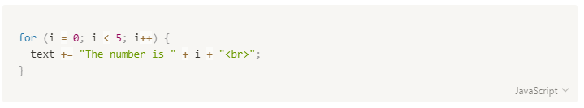

블로그를 시작하며
어느날 문득 그런생각이 들었다
내가 쓴 글을 많은 사람이 본다면 좀 더 좋은 글을 쓸 수 있지 않을까?
시작
처음에는 notion을 이용하려고 하였다. 몇 가지 글을 써본 결과 몇 가지 불편함이 생겼다
- 일부 아티클만 공개하는 것이 어렵다
- 코드 블럭이 예쁘지 않다
특히 두번째 항목은 프로그래머로써 내가 작성한 아티클에 애착이 생기는데 무척 방해가 되었다

분명히 말하지는 나쁘지 않다
다만 나는 개인적으로 다크 테마가 좋은데, 그렇게 하려면 어플리케이션 전체를 다크테마로 바꾸어야 한다는 것이 거슬렸다
어떻게 하면 마음에 드는 글을 쓸 수 있을까?
아예 한번 만들어 볼까? 나쁜 버릇이다. 고치자
github.io
사실 블로그를 만들어야 하는 상황에서 네이버 블로그와 같이 별도의 서버를 유지해야 하는 방식은 처음부터 선택지에 없었다.
가장 큰 이유는 당연히 돈이다. 기술 블로그 운영이 부담이 되지 않으려면 우전 무료이어야 한다.
github.io 는 github.com. 을 기반으로 하는 무료 사이트이며, 또한 우아한 형제나 카카오 같은 곳에서도 사용하기 때문에 트렌드함까지 갖추었다.
하지만 몇 가지 문제가 있다. 바로 이들은 정적파일만 서비스할 수 있다는 점이다
스태틱 파일 서비스가 문제가 되는 점은 우선 html 파일로 서버에 업로드를 해야한다. 하지만
html 파일로 블로그를 직접 작성한다는 것은 너무나 힘들기 때문에 불가능하다.
하지만 여기서 생기는 궁금저이 우아한형제나 카카오 그외에 수많은 곳에서 어떻게 블로그를 github.io 에 작성할까라는 점이다
조사중에 힌트를 얻었다 tech.kakao.com 에서 발최한 글이다
https://github.com/kakao/kakao.github.io 에 push 권한이 있다면:
1. git fetch or pull or clone
2. Jekyll 설치
응? Jekyll 이 뭐지?
Jekyll
Jekyll 은 텍스트 파일(마크다운 포함) 을 정적파일로 구성된 웹사이트로 변환해주는 툴이다.
사용방법은 간단하지는 않지만, 한번 세팅해두면 그뒤로는 쉽게 쉽게 생성이 되는 장점이 있다.
그래서 사용방법을 살펴보던 중에 ...
개발자로서의 자존심이 불쑥 나와버렸다 버릇좀 고쳐!
우리도 충분히 만들 수 있지 않을까?
우리도 절.대.로. 떨어지지 않는 개발자들인데!!
아예 블로그를 만들어가는 과정을 블로그에 기록하면 좋지 않을까?
이런 생각들을 하면서 무작정 만들기 시작했다.
이왕 할거면 만들 수 있는 것은 다 만들어 보는 거다!! 우하하
Markdown
처음 시작한 일은 마크다운을 웹사이트로 변환하는 작업이었다. 우선 마크다운을 컴파일하고 그 결과를 React 써서 렌더링 하면 된다
마크다운을 React 를 사용해서 렌더링하는 라이브러리는 현재없기 때문에 그자체로 의미가 있다는 생각이었다.
마크다운은 컴파일보다는 인터프리터에 가깝다. 즉 전체를 다 읽어본 다음에 형식을 정의할 수 있는 것이 아니라 한글자씩 읽으면서 문법이 완성되는 형태이다. 따라서 기본 문법을 읽히기만 하면 만들기는 어렵지 않을 것이라고 생각했다
우선 기본 문법은 <https://guides.github.com/features/mastering-markdown/> 를 참고하였다
Heading
# This is an <h1> tag
## This is an <h2> tag
###### This is an <h6> tag
This is an <h1> tag
This is an <h2> tag
This is an <h6> tag
이것은 다른 방식의 heading 이다.
underline heading
==================
underline heading
List
```
* Item 1
* Item 2
```
* Item 1
* Item 2
정렬된 리스트는 별도로 처리한다
1. Item1
1. Item2
1. Item3
or
// 첫번째 리스트 아이템의 숫자이외에는 이후에는 단조 증가한다.
1. Item1
2. Item2
3. Item3
- Item1
- Item2
- Item3
Link
https://github.com - url 의 경우 자동으로 인식
[Github](https://github.com) - Github 이라는 레이블로 표시
Image


Blockquotes
As Kanye West said:
> We're living the future so
> the present is our past.
We're living the future so
the present is our past
Inline code
I think you should use an
`<addr>` element here instead.
I think you should use an <addr> element here
instead.
code syntax highlighting
```javascript
function fancyAlert(arg) {
if(arg) {
$.facebox({div:'#foo'})
}
}
```
function fancyAlert(arg) {
if(arg) {
$.facebox({div:'#foo'})
}
}
text syntax
**bold** , __other bold__
*italic* , _other italic_
and ~~strikethrough~~
bold , other bold
italic , other italic
and strikethrough
horizontal line
모두 같은 결과를 만들어낸다
---
===
***